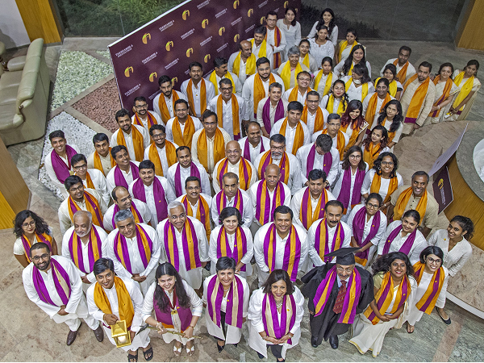

Milestones
A walk through the history of the Takshashila Institution.
Phase 1.0 - Proto-Takshashila
2005 - Early Days
Still the internet’s early days. A bunch of like-minded, passionate bloggers come together to create Indian National Interest as a place for serious discussion on foreign affairs and public policy concerning India. They blog about the pressing issues of the time, often under pseudonyms, while working their day jobs.
Many of these bloggers would go on to found the Takshashila Institution.
2007 - Pragati: An Indian National Interest Review
The Indian National Interest community quickly realises that India does not have reputable national publications with a global outlook. Their effort gives birth to Pragati, an online magazine, in April 2007.
They describe themselves as “an independent community of individuals committed to increasing public awareness and education on strategic affairs, economic policy and governance.”
2008 - Public Policy in India
It’s 2008, and the Indian public policy discourse remains monopolised by vested interests and contained to limited quarters. Over lunch one day at the Lee Kuan Yew School of Public Policy, Singapore, Nitin Pai, Anand Sampath and his colleague Srinivasan, come to the realisation that India needs a public policy school that trains students to engage with the modern world in an increasingly connected world, and emerge as civic leaders. Takshashila would become the pioneer of public policy education in India.
2009 - Takshashila is Founded
From a long process of thinking and cogitating, both in the online blogging world and over physical meetings, is born the idea of a networked think tank. Eschewing the brick and mortar traps of its predecessors to function freely in the digital world, it aims to connect smart people all over the world over the internet.
Takshashila is founded in mid-2009 as an independent, non-partisan think tank without political affiliations. It seeks to uphold the values of liberty, open markets, plural and tolerant society, good governance, and promote India’s national interest in order to claim its right as a global power.
Takshashila has multiple founders - in support and in spirit. Nitin Pai, Narayan Ramachandran, Sameer Wagle, Mukul Asher, Anantha Nageswaran, Niranjan Rajadhyaksha, and Anand Sampath come together to co-found Takshashila. Aruna Urs joins as its first employee in Bengaluru.
In October, Rohini Nilekani becomes an establishment donor with a meaningful grant to help Takshashila get off the ground.
2010 - Why Do We Do What We Do?
Inspired by the heritage of the ancient Takshashila University, the question in the minds of the founders is: What does a Takshashila of the 21st century look like?
Grappling for answers, Takshashila conducts policy roundtables in Mumbai and Delhi. Shalas - typical unconferences, with an innovative, informal format that blend scheduled presentations with spontaneous, even extempore talks from participants - are also held in Delhi and Pune.
The answer is soon found: Takshashila Institution’s aim is to become an apex establishment with a deep social conscience, situated at the crossroads of ideas and people.
Pragati, meanwhile, moves to a print avatar with the same high quality content on economics, international relations and strategic affairs.
2011 - GCPP is Conceived
The founders soon realise that the best route to elevate public discourse is by teaching public policy, civic leadership and public engagement to interested college students and professionals. Takshashila’s destiny as a public policy school takes shape.
A rigorous 12-week course called the Graduate Certificate in Public Policy (GCPP) condensed a full public policy programme into a single semester of intensive learning. It is announced towards the end of the year, and Takshashila’s journey as a pioneer in public policy education in India is well on its way.
Phase 2.0 Yellappa Chetty
2012 - Pioneering Public Policy Education in India
Bengaluru narrowly beats Goa as the headquarters of Takshashila, given its critical mass of multidisciplinary talent pool and flowthrough of such talent. Takshashila finds its first home in Yellappa Chetty Layout, Bengaluru - a nice house tucked inside a quiet green neighbourhood.
The first batch of GCPP starts in January with 25 students. The batch includes Saurabh Chandra, Sameer Wagle, Pavan Srniath, Vasanth Shetty, Revendra T, Sarah Farooqi, Priyadarshini Ravichandran, Sachin Kalbag and others, who continued to be associated with Takshashila in different capacities.
From Day One, GCPP classes are conducted fully online. It remains so, with changes in the tools, tech and LMS platforms used every couple of years.
The first GCPP physical workshop is held in Delhi, followed by Goa. GCPP is now offered thrice a year.

2013 - The Doing Thinkers
Takshashila begins conducting the Nandi Workshop for its GCPP students at Discovery Village. The Policy Hackathon and residential workshops are instrumental to the Takshashila learning experience.
The inaugural Gomtibai Govindji Prize for distinction in the GCPP Programme is awarded to Nivedita Kashyap, policy researcher at Public Affairs Centre, Bengaluru.
Takshashila announces six scholars to conduct independent policy research in areas of national interest, as part of its first scholarship programme: Sabir Ahamed, Arvind Ilamaran, Ameya Naik, Kaushiki Sanyal, Hemal Shah and Praveen Siddarth.
In partnership with Bangalore Political Action Committee (B.PAC), Takshashila launches the B.PAC Civic Leadership Incubator Programme (B.CLIP), which aims to create a pool of good civic leaders that will actively engage in ward level management and administration of the city to improve its governance. The first batch graduates 66 civic leaders.
Takshashila institutes a five-point Code of Conduct for all its staff, fellows, scholars, full-time faculty and members.
The Bangalore Mirror features Nitin Pai, on starting Takshashila and his nomination for ‘Bangalore Heroes’: The Doing Thinker.
2014 - Gamifying Learning
‘Nagara - The Democracy’, a governance simulation game is developed at Takshashila and it becomes part of the GCPP workshops.
Tankscrub, an in-house discussion on everything under the (policy) sun begins and takes place every week on Thursdays ever since.
In association with Mount Carmel College (MCC), Bengaluru, Takshashila conducts its first 10-week Foundational Certificate in Public Policy for undergraduate students looking to enter the (then) sunrise industry of public policy in India. A total of 18 students from MCC, Christ University and NIT, Surathkal complete the course.
Takshashila conducts its first Executive Programme for corporate communications professionals from the Tata Group at the Tata Management Training Centre in Pune.
Takshashila partners with the Hudson Institute, Washington DC to conduct a two-day conference in Bengaluru on shaping India’s new growth agenda and its implications for the world.
A three-day Public Leadership Camp for the students of National Public School, Bangalore is conducted in which they attend sessions on governance, economic reasoning, gender, game theory, public speaking and also play Nagara.
In partnership with the Goa Arts + Literary festival, 2014, Takshashila presents two exclusive panel discussions on public policy.
Takshashila appoints Niranjan Rajadhyaksha as its first Ombudsman.
Pranay Kotasthane joins Takshashila. He is the first Head of Research in 2017 and is currently the Deputy Director and Chair - High Tech Geopolitics Programme at Takshashila.
The Hindu runs a feature on Takshashila and its mission: Be the change.
2015 - Distance from Delhi
Takshashila’s first book publication, A Visible Hand: Essays on the Intersection of Economics, Politics, and Society, authored by Narayan Ramachandran is released.
Later in the year, Takshashila’s second book, ‘Distance from Delhi: Essays on Geopolitics, Economics and Public Policy’, is released.
Takshashila features in a Times of India article ‘Is Bengaluru the Next Think Tank Hub?’, where Nitin Pai explains why distance from Delhi is important to the work at Takshashila.
‘The Future Deck’, cards designed to spark conversations about emerging challenges and opportunities that India and the world are facing, is released.
Takshashila’s first GCPP convocation is held at India Habitat Centre, New Delhi. Successful students receive completion scrolls and copies of the Indian Constitution.
Takshashila launches a new course - Executive Programme in Strategic Government Engagement - designed specifically for corporate executives.
Takshashila conducts the Public Policy Engineering workshop at the techno-managerial fest Kshitij of IIT-Kharagpur .
Takshashila launches #GCPPprimetime, a regular web discussion on public affairs and policy.
Takshashila announces its first grant project for the Public Health Foundation of India on public financing of health by states in India.
Takshashila hosts the Prime Minister of the Central Tibetan Administration (Tibetan government-in-exile) Hon. Sikyong Dr. Lobsang Sangay at The Park, Bangalore for a discussion on ‘Tibet and Geopolitics of Asia’.
Prof M Govinda Rao and Anand Arni are appointed to the Takshashila Council.
2016 - My Freedom to Introspect
Takshashila institutes the Bangalore Fellows Programme, an initiative that endeavours to bring the most talented scholars and intellectuals to the city for public talks, private conclaves and research interaction. Prof Happymon Jacob is the first participant.
Takshashila launches the Bangalore Diplomatic Circle, an initiative to facilitate discussions on foreign policy and international relations with experts and practitioners based in Bangalore, with Kalon Dicki Chhoyang from Dharamsala as the first guest speaker.
Takshashila helps MCC launch a two-year full-time Master of Arts in Public Policy programme, on a build-operate-transfer model.
The first GCPPshala, an alumni outreach initiative and a fun-filled evening of interesting conversations, takes place in Bengaluru.
Anand Arni joins Takshashila as a Distinguished Fellow of the Geostrategic Programme.
Nidhi Gupta becomes the first Head of the policy school, and her daughter Nandita was Takshashila’s first office baby.
Radhika Radhakrishnan, a student from the 11th GCPP batch becomes the first recipient of the MS Bharatha Iyengar Award for her outstanding performance in the programme.
Some of us also appear in India Today’s Independence Day Special edition: My freedom to introspect: ‘National interest is not a real estate game’.
2017 - Podcasting in Public Policy
Takshashila starts its first year-long Post-Graduate Programme in Public Policy (PGP), crafted specifically for working professionals to address the growing need of trained public policy professionals in India.
Lt. General Prakash Menon joins Takshahila as Director of the Strategic Studies Programme. He immediately commences work on conceptualising and executing a course in strategic studies.
Takshashila conducts its first Cogitatum, a four-week online discussion on a specific public policy issue in the news cycle. The first edition is on Understanding Xi Jinping’s China: An Indian Perspective.
Pavan Srinath and Karthik Shashidhar from Takshashila participate in the inaugural episode of The Seen and the Unseen podcast hosted by Amit Varma.
Soon, Pragati houses more podcasts - The Pragati Podcast by Pavan Srinath starts in 2017; Puliyabaazi by Pranay Kotasthane and Saurabh Chandra, and the in-house Takshashila Podcast begin in 2018; and States of Anarchy by Hamsini Hariharan launches in 2019.
Takshashila Convocation takes place in Bengaluru with over 150 attendees.
Phase 3.0 Takshashila L-space
2018 - Library-Space @ Church Street, Bengaluru
Takshashila moves to its current office located at a prime spot on Church Street, Bengaluru. The inauguration of the new office coincides with the launch of General Menon’s book ‘The Strategic Trap: India & Pakistan Under the Nuclear Shadow’.
Takshashila launches the Graduate Certificate in Strategic Studies (GCSS) (now re-branded as GCPP (Defence & Foreign Affairs)) course. Exercise Amrut, named after Bangalore’s own scotch, kicks-off with GCSS.
Today, over a hundred serving armed forces personnel across the tri-services attend the DFA course at Takshashila every cohort, free of charge.
Manoj Kewalramani joins Takshashila. China becomes an area of focused research and study at Takshashila. Manoj is currently the Chair of Indo-Pacific Studies Programme and Fellow - China Studies.
2019 - Creating National and Global Impact
Pragati is recast as Think Pragati and shifts to audio content. This also marks the beginning of All Things Policy, a daily podcast on issues of public policy which has run non-stop since.
Shambhavi Naik, Head of Research at Takshashila, provides testimony before the Parliamentary Standing Committee of Science and Technology, Environment, Forests and Climate Change on the DNA Technology (Use and Application) Regulation Bill, 2019.
The first edition of Ideashala - ‘The Evolving Dynamics of the India-China Relationship’ - takes place at Sapru House, New Delhi.
Takshashila is invited to IndSpaceEx, India’s first simulated space warfare exercise.
Takshashila’s Global No First Use Project launches with a meeting of nuclear policy experts in Bengaluru.
To help students understand nuances of technology in the Information Age and make the best policy choices, Takshashila starts offering the GCPP (Tech & Policy) course.
Takshashila featured in Your Story in an article on involvement of youth in governance: With boot camps, web series and more, these startups are involving youth in governance.
The game Nagara - The Democracy is featured in Bangalore Mirror: Can playing board games save the world? Find out from these Bengalureans.
2020 - Pandemic: Challenges and Opportunities
Takshashila organises a Space Power and Policy Conclave at its office. NewSpace startups, government representatives, military officers, investors and academia participate.
The second edition of Ideashala - ‘The Space Ecosystem in India’ - takes place at the India International Centre in New Delhi. Takshashila’s ‘The New Space Policy 2020’ which calls for decoupling the policy, regulatory, and service delivery roles of ISRO is presented. A few months later, the Union Government liberalises the space sector in India.
Indian Public Policy Review, a peer-reviewed, bi-monthly, online, and open-access journal is launched.
With the onset of the pandemic, Takshashila reorients its research focus towards Covid-19 and its impact on the world. Groundbreaking documents on vaccination strategy for India, vaccine diplomacy framework and re-opening strategy for India are published.
‘India’s Marathon: Reshaping the Post-Pandemic World Order’, an anthology of 15 essays from some of the world’s brightest and young public intellectuals, is released.
The first #DeepWebinar, a thoughtfully curated conversation to push the possibilities of public discourse in the digital age, takes off with Puja Mehra as the guest. Later, Takshashila conducts a six-part #DeepWebinar series in collaboration with the Hudson Institute called the China Challenge Series.
Shambhavi Naik participates in the stakeholder consultation called by the Review Committee on Genetic Manipulation housed in the Department of Biotechnology on the draft guidelines for the regulation of genetically edited organisms in India.
Takshashila launches a new GCPP course offering in Health and Life Sciences. It is spearheaded by Shambhavi Naik.
2021 - India’s Path to Power
‘India’s Path to Power: Strategy in a World Adrift’, a discussion document featuring the country’s leading thinkers and policy practitioners that identifies the key principles that should guide India’s strategic trajectory in the next decade, is released.
Takshashila’s Virtual Campus Gather Town, hosted on a futuristic proximity A/V platform, is launched. GCPP & PGP workshops can now take place in this virtual campus.
Takshashila collaborates with the Marginal Revolution University for inclusion of its course material and faculty in GCPP and PGP programmes, starting January 2021.
Takshashila signs a memorandum of understanding with Public Affairs Forum of India (PAFI) to share knowledge and experiences to advance the field of public policy in India, and leverage each other’s comparative advantages for capacity building of public affairs practitioners.
Politcal Mandala, a quiz to discover where you stand on the political spectrum, is launched.
To broaden the engagement with its 4000+ alumni, Takshashila launches Kalpa, an online community portal of alumni and faculty. The Takshashila Policy Engineer’s Notebook also hits the stands.
2022 - Onwards and Upwards
‘India’s Global Outlook Survey’, an initiative by the Takshashila Institution to understand how Indian policymakers, strategic affairs community, and ordinary citizens view the world and India’s role in it, is released.
Takshashila signs a memorandum of understanding with the Indian Space Association to share knowledge and experiences and set the ground for long-term think tank-industry partnerships in space research and India’s space policy.
Takshashila Library is formally opened for alumni (and other knowledge seekers).
Manoj Kewalramani, Fellow- China Studies & Chair Indo-Pacific Studies Programme testifies before the U.S. China Economic and Security Review Commission on China’s Zero Covid Policy.
‘The Sheathed Sword: From Nuclear Brink to No First Use’ edited by General Menon & Aditya Ramanathan and an output from the Global No First Use Project is released.
2023 - OpenTakshashila: Towards a Global Community
Release of two books in the month of January: Nitopadesha by Nitin Pai and Missing in Action: Why You Should Care About Public Policy by Pranay Kotasthane and Raghu S. Jaitley.
Takshashila institutes two new fellowships aimed at creating high-quality scholarship and knowledge in specified domains: the Network for Advanced Study of Pakistan and the Network for Advanced Study of China.
The Geospatial Research Programme at Takshashila begins under Prof. Nithiyanandam and the monthly Takshashila Geospatial Bulletin is launched.
The Quad Bulletin, a newsletter focused exclusively on the geopolitical dimensions of the Quad is launched.
A revamped version of Takshashila Dispatch, our weekly institutional newsletter authored by Sachin Kalbag is launched.
OpenTakshashila, a global & open community with a strong & unwavering commitment towards meaningful & thoughtful policy discussions is launched.
The year ends with yet another book launch: When The Chips Are Down: A Deep Dive Into A Global Crisis , a first of its kind that analyses semiconductor geopolitics from an Indian national interest perspective, authored by Pranay Kotasthane and Abhiram Manchi hits the stands.
2024 - We, The Citizens
In line with Takshashila’s stated mission of transforming India and strengthening the republic, Khyati Pathak, Pranay Kotasthane & Anupam Manur came up with their latest book - We, The Citizens: Strengthening the Indian Republic - that decodes public policy in a graphical narrative format.